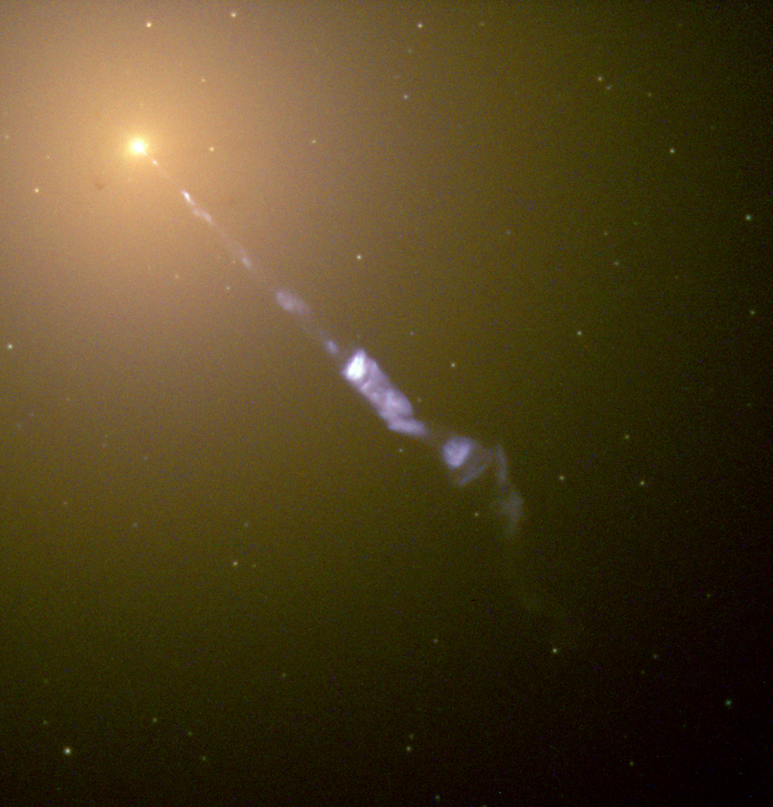

BLAZARS

Many galaxies host a supermassive black hole at the center. When enough gas falls toward that black hole, the region can become extremely luminous. In some cases, the system launches narrow, relativistic jets. If one of those jets points close to our line of sight, we observe a blazar.
Because of this geometry, blazars can appear extraordinarily bright and variable. Their radiation spans a wide range of wavelengths, from radio to gamma rays, and can change rapidly compared to normal galaxies.
Most blazars are located very far away from us. Because of this strong beaming effect, we can detect blazars from billions of light-years away, and many of the ones we observe lie at high redshifts (meaning they are seen as they were in the early universe).
What makes blazars special
- Jet pointed at us: the emission is “boosted” by relativistic effects.
- Strong variability: brightness can change on short timescales.
- Broad spectrum: emission can cover radio, optical, X-ray, and gamma-ray bands.
- Black hole physics: they reveal how accretion disks and jets work.
Studying blazars helps astronomers understand the most energetic processes powered by supermassive black holes and how these processes can influence their host galaxies.

How blazars change over time
Blazars can vary dramatically because their jet emission is strongly beamed toward us. Changes in the accretion flow or in the jet can produce flares across many wavelengths, making blazars some of the most variable and energetic sources in the sky.